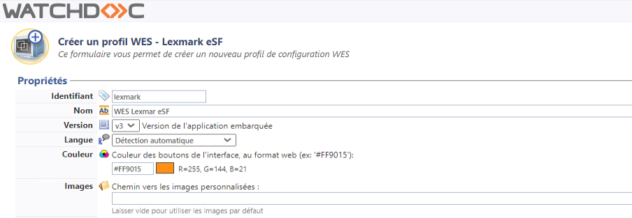
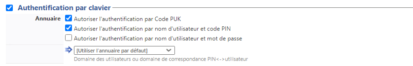
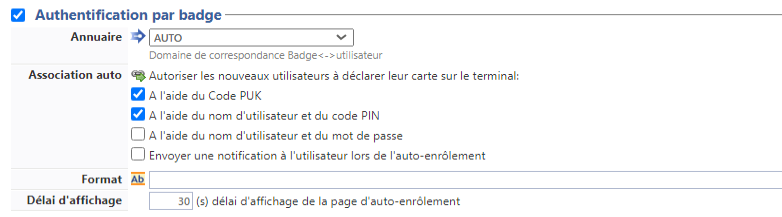
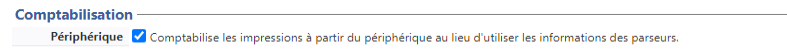
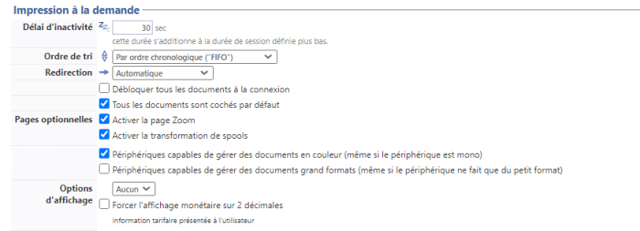
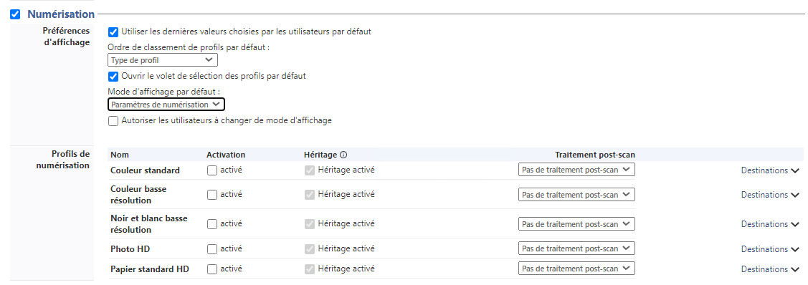
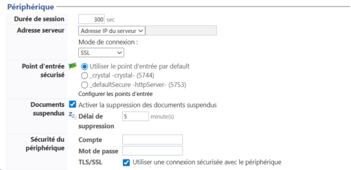
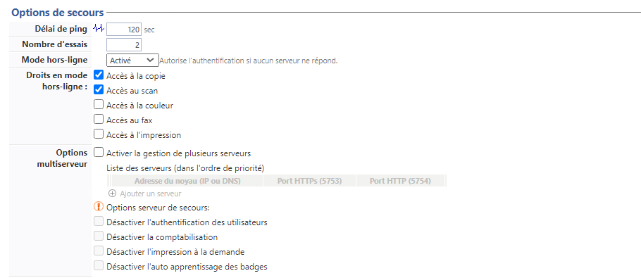
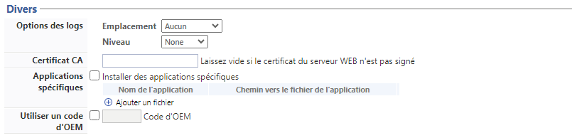
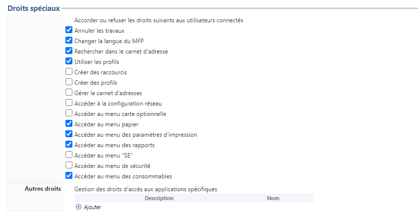

WES Lexmark - Configurer le profil WES
Créer le profil WES
Lors d'une installation initiale de Watchdoc, un profil WES peut être automatiquement créé et configuré à l'aide de paramètres par défaut par l'assistant d'installation. Outre ce premier profil WES par défaut, vous pouvez ajouter autant d'autres profils WES que nécessaires.
-
Depuis le Menu principal de l'interface d'administration, section Configuration, cliquez sur Web & WES :

-
Dans l'interface Web, WES & Destinations de numérisation - Gestion des interfaces clientes, cliquez sur Créer un nouveau profil WES.
-
Dans la liste, sélectionnez le type de profil à créer :

èvous accédez au formulaire Créer un profil WES comportant plusieurs sections dans lesquelles vous configurez votre WES.
Une barre de navigation vous aide à accéder rapidement à la section souhaitée
Configurer le profil WES Lexmark
Configurer la section Propriétés
Utilisez cette section pour indiquer les principales propriétés de WES :
-
Identifiant : saisissez l'identifiant unique du profil WES. Il peut comprendre des lettres, des chiffres et le caractère "_", avec un maximum de 64 caractères. Cet identifiant n'est affiché que dans les interfaces d'administration.
-
Nom : saisissez le nom du profil WES. Ce nom explicite n'est affiché que dans les interfaces d'administration.
-
Global : dans le cas d'une configuration de domaine (maître/esclaves), cochez cette case pour répliquer ce profil du serveur maître vers les autres serveurs.
-
Langue : sélectionnez la langue d'affichage de l'éolienne configurée dans la liste. Si vous sélectionnez Détection automatique, le WES adopte la langue qu'il trouve par défaut dans la configuration de l'appareil.
-
Version : sélectionnez la version du WES. Pour la v3, vous pouvez personnaliser l'interface en choisissant la couleur des boutons et des images en fonction de votre identité graphique :
-
Couleur : entrez la valeur hexadécimale de la couleur correspondant à la couleur du bouton WES. Par défaut, les boutons sont orange (#FF901). Une fois la valeur saisie, la couleur s'affiche dans le champ.
-
Images : si vous souhaitez personnaliser les images WES, entrez le chemin du dossier dans lequel sont enregistrées les images que vous souhaitez afficher à la place des images par défaut (stockées dans C:\Program Files\Doxense\Watchdoc\Images\Embedded\Brands\[Nom_du_fabricant] par défaut). Pour plus d'informations sur la procédure de personnalisation cf. chapitre Personnaliser les boutons et l'image du WES.

-
{kind=link}
Configurer la section Authentification par clavier
-
Activer l'option : cochez la case pour autoriser l'authentification de l'utilisateur depuis un clavier physique ou tactile de l'écran, puis précisez les modalités de cette authentification :
-
Annuaire : cochez le mode d'authentification que vous souhaitez activer :
-
Code PUK
 Puk = Print User Key.
Dans Watchdoc, il s'agit d'un code associé à un compte utilisateur pour permettre à ce dernier de s'authentifier dans un WES.
Le code PUK est généré par un algorithme.
L'utilisateur peut le consulter dans la page "Mon compte" de Watchdoc.
Par souci de sécurité, nous déconseillons l'utilisation du code PUK et recommandons l'utilisation d'un login (compte utilisateur)/code PIN. : le code PUK est automatiquement généré par Watchdoc selon des paramètres définis dans l'annuaire. Ce code est communiqué à l’utilisateur dans la page "Mon compte" ;
Puk = Print User Key.
Dans Watchdoc, il s'agit d'un code associé à un compte utilisateur pour permettre à ce dernier de s'authentifier dans un WES.
Le code PUK est généré par un algorithme.
L'utilisateur peut le consulter dans la page "Mon compte" de Watchdoc.
Par souci de sécurité, nous déconseillons l'utilisation du code PUK et recommandons l'utilisation d'un login (compte utilisateur)/code PIN. : le code PUK est automatiquement généré par Watchdoc selon des paramètres définis dans l'annuaire. Ce code est communiqué à l’utilisateur dans la page "Mon compte" ; -
Nom d'utilisateur et code PIN : composé de 4 ou 5 chiffres, le code PIN de l'utilisateur est enregistré comme attribut LDAP ou dans un fichier de type CVS ;
-
Nom d'utilisateur et mot de passe : autoriser l'authentification par nom d'utilisateur et mot de passe.
N.B. : nous ne recommandons pas l'authentification par login et mot de passe. Néanmoins, si vous optez pour ce mode, assurez-vous que l'écran et le clavier du périphérique sont configurés dans la langue de l'utilisateur et qu'ils permettent de saisir tous les caractères, même les diacritiques (accents, cédille, tilde).
-
-
Annuaire : dans la liste, sélectionnez l'annuaire qui doit être interrogé lors de l'authentification par clavier, en fonction de l'endroit où sont enregistrés les utilisateurs.

Configurer la section Authentification par badge
Authentification par badge : cochez la case pour autoriser l'authentification de l'utilisateur à l'aide d'un badge, puis précisez les modalités de cette authentification :
-
Annuaire : dans la liste, sélectionnez l'annuaire qui doit être interrogé lors de l'authentification par badge, en fonction de l'endroit où sont enregistrés les codes des badges ;
-
Association auto : si vous autorisez l'enrôlement
Action au cours de laquelle un compte utilisateur est associé au numéro de badge qui lui appartient. L'enrôlement est réalisé lors de la première utilisation d'un badge. L'enrôlement peut être réalisé par le responsable informatique lorsqu'il délivre le badge à un utilisateur ou par l'utilisateur lui-même qui saisit son identifiant (code PIN, code PUK ou identifiant et mot de passe) qui est alors associé à son numéro de badge. Une fois l'enrôlement réalisé, le numéro de badge est associé définitivement à son propriétaire. depuis le WES, précisez de quelle manière l'utilisateur associe son badge à son compte lors de la première utilisation :
Code PUK : l'utilisateur saisit son code PUK pour enrôler son badge ;
Nom d'utilisateur et code PIN : l'utilisateur saisit ses nom et code PIN pour enrôler son badge ;
Nom d'utilisateur et mot de passe : l'utilisateur saisit son compte LDAP (nom et mot de passe) pour enrôler son badge ;
Envoyer une notification : cochez la case pour notifier l'utilisateur une fois son badge enrôlé ;
-
Format : généralement, lorsque le code PUK est enregistré dans un attribut de l'annuaire LDAP, il est encodé pour des raisons de sécurité. Obtenir le code correspondant à celui du badge nécessite donc une transformation du format lu par le lecteur de badge. indiquez, si nécessaire, de quelle manière la chaîne de caractères du numéro du badge lu doit être transformée. Ex : raw;cut(0,8);swap (cf. Changer le format du badge).
-
Délai d'affichage : indiquez, en secondes, le délai pendant lequel l'utilisateur peut saisir son code permettant l'enrôlement. Au-delà, la page d'enrôlement s'efface et l'utilisateur doit de nouveau passer son badge pour s'enrôler. (5s < Délai < 15s)

Configurer la section Connexion anonyme
Cochez cette section pour activer la Connexion anonyme afin de permettre à un utilisateur non-authentifié d'accéder au périphérique en cliquant sur un bouton spécifique.
-
Titre du bouton : saisissez le libellé affiché sur le bouton d'accès aux fonctions du périphérique. Par défaut, le texte est Anonymous :

N.B. : il est possible de restreindre les fonctionnalités dont l'utilisateur anonyme peut bénéficier en appliquant une politique de droits (sur la file, sur le groupe ou sur le serveur) en utilisant le filtre Utilisateur anonyme.
Configurer la section Comptabilisation
Dans cette section, indiquez si vous souhaitez que la comptabilisation soit effectuée par le périphérique lui-même ou à partir du parseur Watchdoc.
-
Périphérique > Comptabilise les impressions à partir du périphérique : cochez cette case si vous souhaitez que la comptabilisation soit prise en charge par le périphérique. Incompatible avec l'utilisation de quotas.

Configurer la section Impression à la demande
Dans cette section, précisez les paramètres liés à la fonction d'impression à la demande, c'est-à-dire l'interface depuis laquelle l'utilisateur accède à ses travaux en attente et depuis laquelle il supprime ou valide les impressions :
-
Délai d'inactivité : indiquez (en secondes), le délai d'inactivité autorisée par le WES avant désactivation.. Cette durée s'additionne à la durée de session définie en paramètre Durée de session dans la section Périphérique.
-
Ordre de tri : dans la liste, sélectionnez l'ordre dans lequel les travaux d'impressions doivent être présentées sur le WES :
-
Chronologique inverse: du plus récent au plus ancien ;
-
Chronologique: du plus ancien au plus récent.
-
-
Redirection : si l'utilisateur n'a pas de travaux d'impression en attente, précisez le comportement du WES :
-
Automatique : le WES affiche l'interface d'accueil définie par défaut ;
-
Impressions en attente : le WES affiche la liste des documents en attente même s'il n'y en a aucun.
-
Accueil du copieur : l'interface d'accueil par défaut du périphérique s'affiche ;
-
Photocopie : l'interface de photocopie du périphérique s'affiche ;
-
-
Débloquer tous les documents à la connexion : cochez la case pour faire en sorte que tous les travaux en attente soient automatiquement imprimés lorsque l'utilisateur s'authentifie via le clavier ou à l'aide de son badge sur le périphérique d'impression. Dans ce cas de figure, l'utilisateur n'accède pas à la liste des travaux en attente pour les supprimer ou les imprimer.
-
Tous les documents sont cochés par défaut : cochez la case pour faire en sorte que tous les travaux en attente soient automatiquement cochés dans la liste lorsque l'utilisateur s'authentifie.
-
Pages optionnelles : cochez cette case pour que l'utilisateur puisse disposer de fonctions complémentaires sur les pages :
-
Activer la page Zoom : cochez cette case pour que l'utilisateur puisse activer le zoom sur les travaux en attente d'impression ;
-
Activer la transformation de spools : cochez cette case pour activer la fonction de transformation de spools ;
-
Périphérique capable de gérer les documents en couleur : cochez la case pour permettre au périphérique
-
Périphérique capable de gérer les documents grands formats : cochez la case pour permettre au périphérique
-
Activer la page Edit : cochez cette case pour que l'utilisateur puisse éditer les travaux en attente d'impression afin de sélectionnerbles pages à imprimer ;
-
-
Options d'affichage :dans la liste, sélectionnez l'information tarifaire affichée à l'utilisateur via le WES : aucun, le prix ou le coût de ses impressions
-
Forcer l'affichage monétaire sur 2 décimales : cochez la case pour limiter l'affichage du prix à 2 décimales uniquement.

-
Configurer la section Numérisation
Cochez la case si vous souhaitez activer la fonction WEScan (cf. WEScan) et configurez les paramètres suivants.
-
Préférences d'affichage - utiliser les dernières valeurs choisies... : cochez la case pour proposer à l'utilisateur les profils (paramètres prédéfinis) de numérisation les plus utilisés, ce qui offre un gain de temps lorsque les usages de numérisation sont les mêmes. Précisez ensuite si le classement doit s'effectuer à l'aide ;
-
du type de profil : profil le plus souvent choisi ;
-
de la date d'utilisation: profil choisi lors de la dernière utilisation.
-
-
Ouvrir le volet de sélection : cochez cette case pour proposer une interface dans laquelle l'utilisateur a le choix entre tous les paramètres de numérisation, ce qui est utile lorsque les usages de numérisation sont très variés. Précisez ensuite si vous souhaitez afficher
-
les paramètres de numérisation : l'utilisateur est libre de choisir les paramètres ;
-
les profils : l'utilisateur choisit parmi des profils de numérisation prédéfinis.
-
-
Autoriser les utilisateurs à changer le mode d'affichage : cochez cette case pour permettre à l'utilisateur de personnaliser son interface en choisissant son mode d'affichage préféré.
-
Profil de numérisation : pour chaque profil listé, vous pouvez cocher :
-
activation : pour le rendre actif dans l'interface embarquée ;
-
héritage : pour permettre à l'utilisateur de créer un nouveau profil héritant des paramètres du profil existant. L'utilisateur sera ensuite libre de modifier un ou plusieurs paramètres du profil d'origine ;
-
traitement post-scan : si un traitement post-scan a été configuré (cf. Traitements post-scan), sélectionnez-le dans la liste ;
-
destinations : la destination est l'endroit où est envoyé le document numérisé. Pour chaque profil, vous pouvez activer, désactiver et définir par défaut une ou plusieurs destinations :
-
E-mail : envoi de la numérisation vers l'e-mail d'un destinataire saisi dans l'interface ;
-
Mon e-mail : envoi de la numérisation vers l'e-mail de l'utilisateur (systématiquement connue) ;
-
Dossier : envoi de la numérisation vers un dossier prédéfini de l'espace de travail accessible à l'utilisateur.

-
-
Configurer la section Périphérique
Dans cette section, configurez les modalités d'échange entre le périphérique sur lequel est paramétré le WES et Watchdoc dans le cas où les périphériques n'arrivent pas à accéder au serveur Watchdoc.
-
Durée de session : nativement, les périphériques Lexmark gèrent la fermeture automatique de la session utilisateur au bout d'un temps configuré dans ses options. Pour faciliter la configuration, il est possible de préciser cette durée.
-
Adresse serveur : précisez
-
le nom DNS (déterminés au démarrage du service) du server Watchdoc.
-
l'alias DNS du server Watchdoc.
-
l'alias DNS du serveur
-
une adresse spécifique à saisir dans le champ dédié.
-
-
Mode de connexion : sélectionnez le mode de connexion activé entre le WES et le kernel Watchdoc :
-
SSL : : le WES utilise toujours le SSL pour communiquer avec le serveur.
N.B. : l'activation du SSL peut provoquer des lenteurs ou des alertes en cas de certificats non reconnus
-
Mixte : le WES s'adapte automatiquement en fonction des données communiquées : il utilise SSL1 pour les données sensibles (code PUK, login/mdp, ...) et non SSL pour les données non sensibles ;
-
SSL désactivé : le WES n'utilise jamais le SSL pour communiquer avec le serveur.
N.B. : lorsque le SSL est désactivé, il est recommandé de ne pas utiliser la connexion ou l'association automatique du badge (enrôlement) par compte et mot de passe
-
-
Point d'entrée sécurisé : si vous avez sélectionné un mode de connexion SSL ou Mixte, depuis la v. 6.1.0.5262, vous pouvez préciser le point d'accès que vous souhaitez utiliser.
Le nombre de points d'entrée figurant dans la liste varie en fonction de ceux qui ont été préalablement configurés dans l'interface Serveur Web, section DSP (cf. Configurer le Serveur web). Si vous n'avez pas configuré ces points d'entrée préalablement, cliquez sur Configurer les points d'entrée.
-
le point d'entrée par défaut : il s'agit du point d'entrée défini comme point d'entrée par défaut dans la section DSP ;
-
_crystal (5744) : point d'entrée sécurisé par défaut.
-
-
Documents suspendus :
-
Activer la suppression : cochez la case pour permettre au WES de supprimer les demandes d'impression dont l'état est "suspendu" en raison d'un problème tel que bourrage papier ou consommables manquants. Cette fonction correspond à la fonction "Canceljob" activable sur les périphériques (Paramètres > Imprimer > Configuration > "Suppression automatique des travaux d'impression suspendus") ;
-
Délai de suppression : indiquez, en minutes, le délai au-delà duquel un travail "suspendu" doit être supprimé de la file d'attente(de 1 à 60 min.).
-
-
Sécurité du périphérique : indiquez les paramètres de connexion permettant à Watchdoc de communiquer avec le périphérique :
-
compte / mot de passe : saisissez le compte et le mot de passe du compte administrateur du périphérique ;
-
TLS/SSL : cochez la case si vous souhaitez sécuriser la connexion avec le périphérique au moyen de ce protocole

-
Configurer la section Options de secours
Dans cette section, vous configurez le comportement des périphériques d'impression dans le cas où le serveur Watchdoc ne répond pas.
-
Délai de ping : indiquez, en secondes, la fréquence à laquelle le périphérique interroge le serveur pour vérifier sa configuration et l'informer qu'il fonctionne correctement ;
-
Nombre d'essais : indiquez le nombre de connexions que le périphérique doit tenter vers le serveur principal avant de passer au serveur de secours.
-
Mode hors-ligne : activez ou désactivez le mode hors-ligne qui permet au périphérique de fonctionner même dans le cas où le serveur principal et tous les serveurs de secours sont en panne. Dans ce cas, précisez quelles sont les fonctions proposées par le périphérique :
-
Accès à la copie : cochez la case pour autoriser l'utilisateur à photocopier ;
-
Accès au scan : cochez la case pour autoriser l'utilisateur à numériser ;
-
Accès à la couleur : cochez la case pour autoriser l'utilisateur à imprimer des documents en couleur ;
-
Accès au fax : cochez la case pour autoriser l'utilisateur à envoyer des documents par fax ;
-
Accès à l'impression : cochez la case pour autoriser l'utilisateur à imprimer des documents.
Si le mode hors-ligne est désactivé, en cas de panne du serveur principal et des serveurs de secours, le périphérique est bloqué jusqu'à dépannage de l'un des serveurs.
-
-
Options multiserveur : cochez la case pour autoriser le recours à un ou plusieurs serveurs de secours, puis complétez l'adresse IP et les ports d'accès à ce(s) serveur(s) de secours disponible(s).
Précisez ensuite les fonctions assurées par le(s) serveur(s) de secours :-
Désactiver l'authentification des utilisateurs : cochez cette case si le serveur de secours n'authentifie pas les utilisateurs. Pour chaque demande, il renvoie les informations d'un utilisateur anonyme avec les droits définis pour un utilistateur de type anonoyme sur le serveur princpal. Les travaux réalisés sont alors comptabilisés sous le compte "anonymous" ;
-
Désactiver l'accounting : cochez cette case si le serveur de secours ne traite pas les informations de comptabilisation. Ces informations sont enregistrées localement sur le périphérique pour être envoyées au serveur principal dès que la connexion avec ce serveur est rétablie ;
-
Désactiver l'impression à la demande : cochez cette case si le serveur ne permet pas ce mode d'impression ;
-
Désactiver l'auto-apprentissage des badges : cochez cette case si le serveur de secours ne peut assurer l'auto-apprentissage (enrôlement) des badges. Dans ce cas, seuls les badges déjà connus peuvent être utilisés sur ce serveur.

-
Configurer la section Divers
Dans cette section, vous configurez le comportement des périphériques d'impression dans le cas où le serveur Watchdoc ne répond pas.
-
Options des logs - Emplacement : indiquez à quel emplacement l'application doit collecter les informations qu'elle enregistre dans les fichiers traces :
-
fichier : cochez cette case pour que les informations soient enregistrées dans un fichier accessible par Watchdoc ;
-
périphérique : cochez cette case pour que les informations soient enregistrées sur le périphérique ;
-
tous : cochez cette case pour que les informations soient enregistrées dans un fichier accessible par Watchdoc et sur le périphérique.
-
-
Options des logs - Niveau : indiquez le niveau de détail des informations du WES enregistrées :
-
debug : sélectionnez ce choix pour garder les traces laissées en cas de dysfonctionnement du WES ;
-
verbose : sélectionnez ce choix pour garder toutes les traces du WES ;
-
warning : sélectionnez ce choix pour garder toutes les traces laissées par le WES en cas d'alerte ;
-
error : sélectionnez ce choix pour garder les traces laissées lorsqu'une erreur est détectée au niveau du WES ;
-
-
Certificat CA : saisissez dans ce champ le chemin d'accès au certificat (signé par une autorité de certification) spécifiquement dédié aux périphériques d'impression Lexmark ou laissez libre si le certificat est auto-signé (self-signed) ;
-
Applications spécifiques : cochez cette case si vous souhaitez installer des applications spécifiques sur le WES, puis indiquez leur nom et le chemin vers le fichier d'application (pilote de lecteur de badges spécifique, par exemple) ;
-
Utiliser un code OEM : cochez la case et indiquez dans le champ le code OEM utilisé pour le périphérique Lexmark.

Configurer la section Droits spéciaux
Dans cette section, cochez les cases correspondant aux droits à accorder aux utilisateurs connectés au WES :

Valider le profil
1. Cliquez sur le bouton pour valider la configuration du profil WES.
→ Une fois validé, le profil WES peut être appliqué sur une file d'impression.